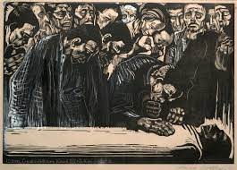

134. Memorial Sheet for Karl Liebknecht. Kathe Kollwitz. 1919-1920 CE Woodcut.
- Form
- Stark black and white of the woodcut used to magnify the grief
- Human grief dominates
- Patronage
- Family of Liebknecht asked Kollwitz to memorialize him
- Technique
- Wood-block print
- Kollwitz used this technique to reinforce the emotions depicted in the scene
- She liked the primitive quality that wood-block prints could render
- Context
- Liebknecht was among the founders of the Berlin Spartacus League, which became the German Communist Party
- In 1919, Liebknecht was shot to death during a Communist uprising in Berlin called the Spartacus revolt
- Liebknecht was held to be a martyr in the Communist cause
- There are no political references in the woodcut
- Themes of war and poverty dominate the artist's oeuvre
- She often emphasized the theme of women grieving over dead children; her son died in WWI; the artist then became a socialist.